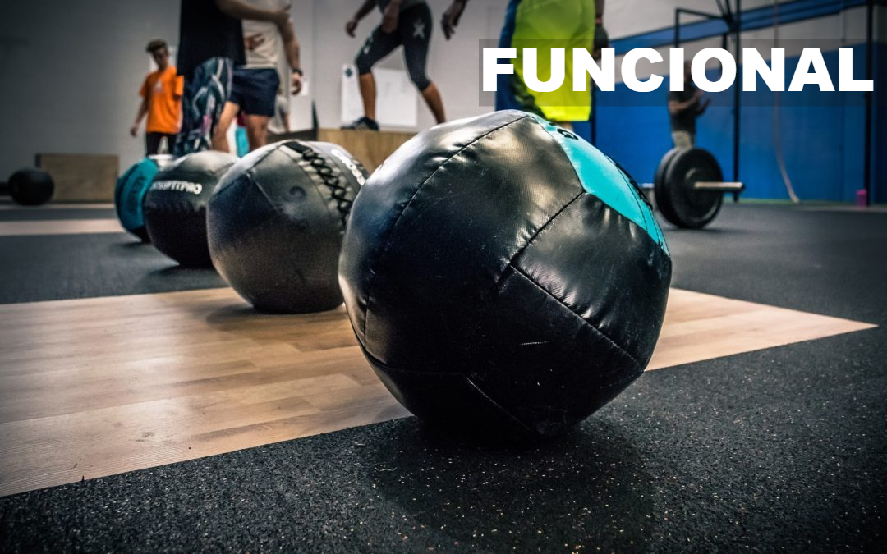
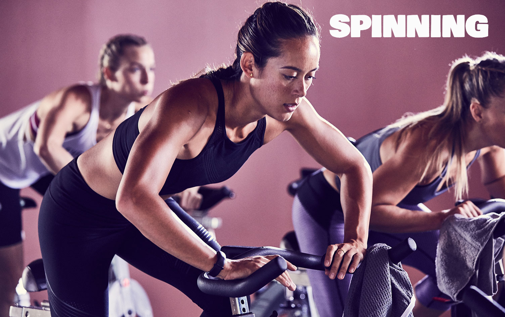
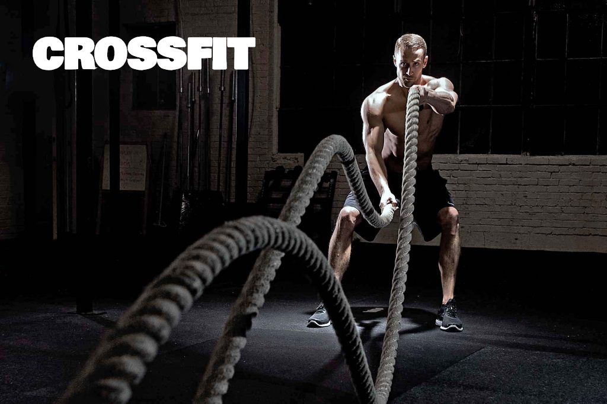
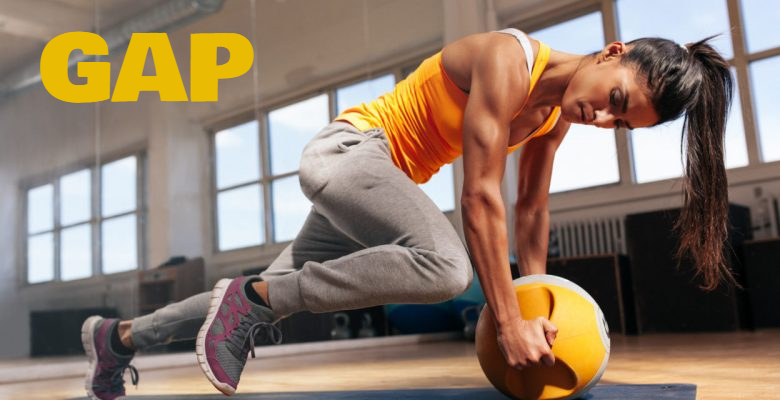
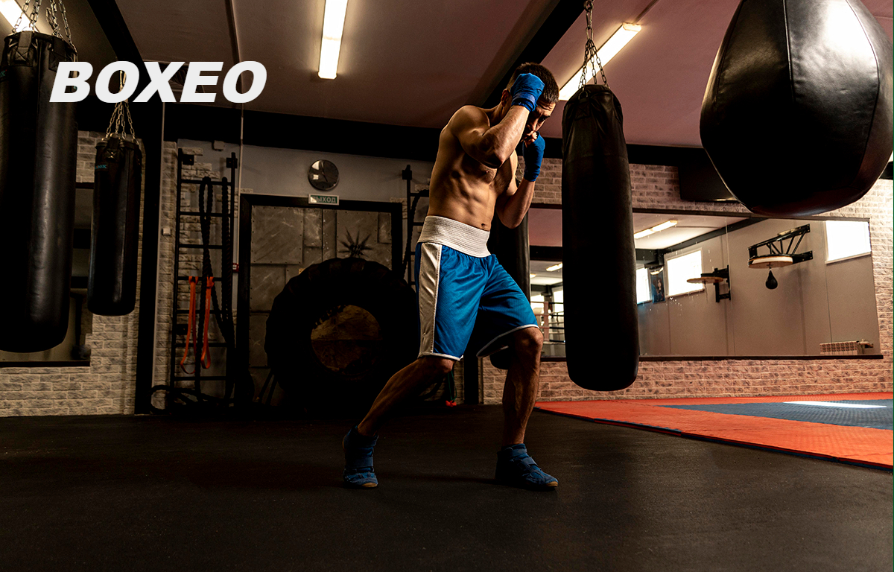

<section id="entrenamiento">
  <div id="carouselExampleCaptions" class="carousel slide">
    <div class="carousel-indicators">
      <button type="button" data-bs-target="#carouselExampleCaptions" data-bs-slide-to="0" class="active" aria-current="true" aria-label="Slide 1"></button>
      <button type="button" data-bs-target="#carouselExampleCaptions" data-bs-slide-to="1" aria-label="Slide 2"></button>
      <button type="button" data-bs-target="#carouselExampleCaptions" data-bs-slide-to="2" aria-label="Slide 3"></button>
      <button type="button" data-bs-target="#carouselExampleCaptions" data-bs-slide-to="3" aria-label="Slide 4"></button>
      <button type="button" data-bs-target="#carouselExampleCaptions" data-bs-slide-to="4" aria-label="Slide 5"></button>

      <button type="button" data-bs-target="#carouselExampleCaptions" data-bs-slide-to="5" aria-label="Slide 6"></button>


    </div>
    <div class="carousel-inner">
      <div class="carousel-item active">
        
        <div class="carousel-caption d-none d-md-block">
          <h5>Entrenamiento Funcional</h5>
          <p>Esto quiere decir que los ejercicios del entrenamiento funcional involucran todos los músculos necesarios para realizar una actividad física determinada que potenciará el rendimiento de ese movimiento en la vida cotidiana. Por lo tanto, hay mayor trabajo físico y se quema una mayor cantidad de calorías en poco tiempo.</p>
         
         <br> <h4>Beneficios:</h4> <br>
          <ul>
              <li>Trabaja varios músculos simultáneamente</li>
              <li>Genera una gran quema de calorías – más que las máquinas</li>
              <li>Las áreas trabajadas benefician el rendimiento en casi cualquier deporte</li>
              <li>Genera un gran desarrollo de fuerza funcional</li>
              <li>Mejora la postura del cuerpo</li>
              <li>Los músculos crecen, tienen una estética natural</li>
              <li>Utiliza igualmente los tres planos del movimiento (lateral, frontal y transversal)</li>
          </ul>
        </div>
      </div>
      <div class="carousel-item">
        
        <div class="carousel-caption d-none d-md-block">
          <h5>Spinning</h5>
          <p>El spinning se ha hecho muy popular porque permite realizar entrenamientos de alta intensidad y sin impacto, incluso para personas que no son ciclistas. Además, la intensidad de las sesiones de spinning se puede adaptar fácilmente a las personas que se encuentran en baja forma física y también a personas con lesiones que no pueden realizar ejercicios aeróbicos y de potencia debido al impacto que estos ejercen sobre las articulaciones.</p>

          <br> <h4>Beneficios:</h4><br>
          <ul>
            <ul>
              <li>Favorecer la pérdida de peso o el mantenimiento del mismo</li>
              <li>Mejorar el metabolismo</li>
              <li>Fomentar la tonificación muscular en general</li>
              <li>Ayudar a mantener sanas las articulaciones</li>
              <li>Mejorar la salud cardiovascular</li>
              <li>Impulsar la resistencia cardiorrespiratoria</li>
              <li>Fortalecer el sistema inmunitario</li>
              <li>Ayudar a cuidar el suelo pélvico, al no haber impacto</li>
          </ul>
          </ul>
        </div>
      </div>
      <div class="carousel-item">
        
        <div class="carousel-caption d-none d-md-block">
          <h5>Crossfit</h5>
          <p>Se trata de una forma de entrenamiento basada en ejercicios constantemente variados, con movimientos funcionales que se ejecutan en un tiempo determinado, el cual no debería superar los 50 minutos de duración.

            Las actividades que se practican incluyen ejercicios cardiovasculares, levantamiento de pesas y trabajo de fuerza; además, se pretende explorar diferentes habilidades y capacidades físicas de la persona mediante ejercicios de calistenia y gimnásticos. Por tanto, es necesario cierto acondicionamiento físico, flexibilidad, equilibrio y resistencia muscular y respiratoria para llevarlo a cabo.</p>

          <br> <h4>Beneficios:</h4> <br>

          <ul>
            <li>Incrementa la resistencia muscular, cardiovascular y respiratoria.</li>
            <li>Potencia la habilidad de coordinación y equilibrio.</li>
            <li>Mejora el estado de ánimo y la autoestima.</li>
            <li>Contribuye a incrementar la masa muscular.</li>
            <li>Ayuda a bajar de peso, ya que se considera un deporte «quemagrasas».</li>
            <li>Fomenta las relaciones, dado que a menudo se practica en grupo.</li>
        </ul>
        </div>
      </div>
      <div class="carousel-item">
        
        <div class="carousel-caption d-none d-md-block">
          <h5>GAP</h5>
          <p>El GAP es una clase colectiva de tonificación dirigidas por un monitor que se centran en el trabajo de glúteos, abdomen y piernas. Se trabajan estos grupos musculares mencionados anteriormente de forma aislada durante media hora. Normalmente, el monitor dirige la clase en función de la música para motivar y apoyar a los que están entrenando. El GAP se adapta a todos los niveles de fuerza y técnica y también a cualquier edad. Esto se debe a que el esfuerzo se puede regular y adaptar, así como los tipos de ejercicios o el número de repeticiones.</p>

          <br> <h4>Beneficios:</h4> <br>

          
            <ul>
              <li>Favorecen la definición muscular y mejoran la estética corporal.</li>
              <li>Corrigen problemas de postura y espalda.</li>
              <li>Aumentan la fuerza en las piernas, incluyendo los abductores, glúteos y cuádriceps.</li>
              <li>Prevención de problemas de incontinencia gracias al fortalecimiento del suelo pélvico
              </li>
              <li>Ayudan en la prevención de problemas de incontinencia al fortalecer el suelo pélvico.</li>
            </ul>
            
        
        </div>
      </div>
      <div class="carousel-item">
        
        <div class="carousel-caption d-none d-md-block">
          <h5>Boxeo</h5>
          <p>El boxeo es un deporte reconocido a nivel mundial. Es un deporte individual, aunque cada participante cuenta con un grupo de personas que lo ayudan. La actividad consiste en dar golpes al contrario haciendo uso de los puños enguantados. A diferencia de otros deportes de pelea o lucha, en este solo se permite pegar por encima del cinturón.
            Si uno de los atletas es golpeado de tal forma que no puede seguir el combate, se da al otro como ganador. Pero, si tras concluido el tiempo fijado no hay ningún ganador, los jueces se encargaran de determinar quién es el vencedor, lo que se conoce como la victoria por puntos.</p>

          <br> <h4>Beneficios:</h4> <br>

          
            <ul>
              <li>Mejora salud cardiovascular.</li>
              <li>Corrigen problemas de postura y espalda.</li>
              <li>Mejora la resistencia y la capacidad de los atletas para soportar largos períodos de actividad física.</li>
              <li>Una sesión de entrenamiento de boxeo de una hora puede quemar entre 600 y 800 calorías. </li>
              <li>Mejora la coordinación.</li>
            </ul>
                    
        </div>
      </div>
      <div class="carousel-item">
        
        <div class="carousel-caption d-none d-md-block">
          <h5>HIT</h5>
             <p>Los entrenamientos HIT alternan entre breves períodos de ejercicio anaeróbico de alta intensidad y breves períodos de recuperación. Durante el periodo de ejercicio anaeróbico, trabajas al máximo de tu capacidad. La frecuencia cardíaca se eleva a entre el 80 y el 95 por ciento de tu frecuencia cardíaca máxima (FCM).</p>
          <br> <h4>Beneficios:</h4> <br>

          
            <ul>
              <li>A pesar de la corta duración del entrenamiento HIT, estarás quemando muchas más calorías que con el ejercicio aeróbico.</li>
              <li>Los estudios demuestran que el entrenamiento HIT puede mejorar la resistencia, la velocidad, la agilidad y la potencia de un atlet.</li>
              <li>En el caso de las personas con presión arterial alta, se ha demostrado que el HIT ayuda a reducir la presión arterial y la frecuencia cardíaca.</li>
              <li>Mejora la composición corporal.</li>
              <li>Mejora el funcionamiento de la insulina.</li>
            </ul>
            
        
        </div>
      </div>
    </div>
    <button class="carousel-control-prev" type="button" data-bs-target="#carouselExampleCaptions" data-bs-slide="prev">
      <span class="carousel-control-prev-icon" aria-hidden="true"></span>
      <span class="visually-hidden">Previous</span>
    </button>
    <button class="carousel-control-next" type="button" data-bs-target="#carouselExampleCaptions" data-bs-slide="next">
      <span class="carousel-control-next-icon" aria-hidden="true"></span>
      <span class="visually-hidden">Next</span>
    </button>
  </div>
    
  </section>